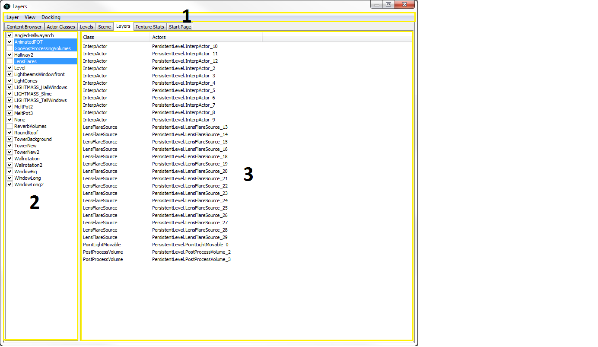
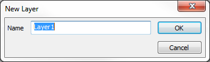

Layers Browser Reference
Overview
The Layers Browser allows you to organize Actors in your Level.
Layers have two powerful uses (hiding and selecting actors), but they are only as powerful as when well organize.
You can use your layers to quickly un-clutter a scene leaving only the geometry and Actors that you are working with. For example you might be working on a building that has multiple levels but is comprised of many modular parts. By assigning each floor to a layer you can hide each of the floors you aren't working on making the top view much more manageable.
An Actor can be in as many layers as you want. This might be useful if you have different sets of Actors that full under overlapping layers. For instance, you could organize your layers by assigning everything to a zone and have a layer comprised of all the doors in your level.
When creating large levels, the more extensively you use layers, the easier your job will be. And remember, it's always easier to start using layers from the beginning rather than trying to incorporate them after you're already deep into the creation of your level.
Opening the Layers Browser
The Layers Browser can be accessed through the View menu of the level editor. Selecting the Browser Windows > Layers option will open the Layers Browser directly. Another option is to click the Open the Content Browser button in the main level editor toolbar and then select the Layers tab in the browser window that opens.
Layers Browser Interface
The Layers Browser is comprised of three main section:

- Menu Bar
- Layers List
- Actor List
Menu Bar
Layer
- New... - Create a new Layer.
- Rename... - Rename the currently-selected Layer.
- Delete... - Remove the currently-selected Layer from the Layers list.
- Add Selected Actors to Layer - Add selected Actors to the currently-selected Layer
- Delete Selected Actors from Layer - Remove selected Actors from the currently-selected Layer.
- Select Actors - Select Actors in the current Layer.
- Deselect Actors - Deselect Actors in the current Layer.
- Make All Layers Visible - Makes all layers visible.
View
- Refresh Refreshes the layer list
Docking
- Docked - This option will dock a currently floating browser into the main browser window. When the current browser is docked, this option appears checked.
- Floating - This option will undock a docked browser from the main browser window causing it to become a floating browser in its own window. When the current browser is floating, this option will be checked.
- Clone Browser - This option will create a duplicate of the current browser.
- Remove Browser - This option will remove or delete the current browser. This option is only enabled on cloned browser windows.
Layers List
Initially, everything you add to your Level will be placed in the default None layer. As you add more Actors and create more layers, they will appear in the list.
Next to each layer is a checkbox. If checked, the Actors in the layer will be visible; otherwise, they will not be visible.
It is possible to select multiple layers by control-clicking and or shift-clicking the layers. Be aware that when you duplicate an Actor, that new Actor will remain in the layer that its parent actor was in. Because of this it is good to start placing your Actors into layers as soon as you create them to make setting up the Layers browser a little more manageable.
Actor List
The Actor List displays all of the actors contained within any and all layers selected in the Layers List. Any time a new layer is selected in the Layers List, the Actor List will become populated with all of the actors contained within that layer or layers. This list can be sorted by the class of the actors or by actor name. Double-clicking any actor in the list will select it in the viewport so it can be modified.
Creating New Layers
To create a new layer you must first select one or all of the Actors you want to include in the layer. Next, go to the Layer menu and select New....

A window will pop up and you can then name your layer. The Actors in this layer now belong to two layers, the one you just created and the default layer, None.
Adding and Subtracting to and from Layers
To add Actors to a layer simply select the Actors you wish to include in a layer, then select the layer in the Layers Browser and select Add Selected Actors to Layer from the Layer menu. You can also remove actors by following the same process and selecting Delete Selected Actors from Layer.
Selecting Actors by Layer
Another useful feature in using Layers is that you can use them to select Actors of a particular layer. You might have a field of trees for which you only one tree StaticMesh, but eventually you will have three types of trees. In the meantime, you could use the one tree and propagate it throughout the level but assigning certain sets of trees into different layers. Later you can then go back and select that layer by click on the layer name and then clicking the Select Actors from the Layer menu, and then change the StaticMesh property of all of them at once.
Important!
You are viewing documentation for the Unreal Development Kit (UDK).
If you are looking for the Unreal Engine 4 documentation, please visit the Unreal Engine 4 Documentation site.